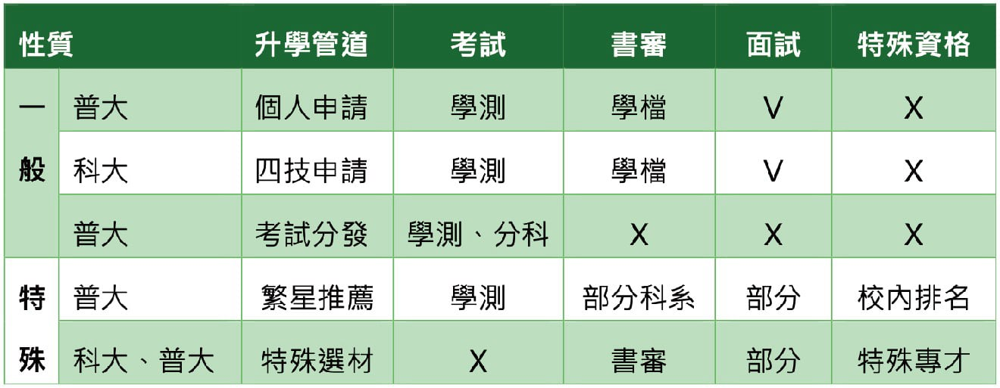

108課綱上路後，為達成「適性揚才」、「終身學習」的願景之下，整體考招制度也進行相關調整，以普通高中升學至四年制夜間大學為例，就有五個升學管道可選擇，若自身有志往軍校、警校或具有其他運動專長者，亦有其他三種管道，因此，瞭解各項管道競爭方法，找出對自己最有利的升學途徑，便格外重要，由於此專刊篇幅有限，故僅列舉大家最常使用的五個升學管道，其他升學管道資訊歡迎至愛普倈教育顧問高中升大學官方網站查詢或與愛普倈教育顧問預約時間進行諮詢：
特殊選材：找尋具有特殊才能學生
特殊選材採各校單獨招生模式，招生時間約為每年10月起至12月，與傳統的學測或入學考試不同，特殊選才更注重學生的專業能力和成就，通常需要提供作品集、競賽成績、專業證書等材料，並可能參加面試或專業測驗。此管道適合那些在特定領域有顯著表現或潛力的學生，讓他們能夠依照自己的專長進一步深造。
繁星推薦：依在校排名作為最終選擇依據
繁星推薦主要針對高中內排名前50%的學生，每年2月到3月，符合條件的學生可通過學校內部推薦報名，並選擇志願科系。與其他升學管道不同，繁星推薦的競爭不以學測成績為主，而是根據學生在校內的成績百分比作為最終的上榜依據。
申請入學：除學測成績外，亦參考學生準備的審查資料及面試成績
個人申請除了參考學測成績外，還需要提供其他資料來進行選拔，學生可以根據各校的招生簡章，提交學業成績、課外活動、獎項證明、自傳等材料，並參加書審、面試等程序。這種方式強調學生的綜合素質，不僅看重學測成績，還重視學生的發展潛力、學術能力與特長。成功申請後，學生可根據所選科系進入大學就讀。
考試入學：以學測（部分）、分科測驗成績作為錄取標準
欲透過考試入學管道進入大學的學生，需參加學測和分科測驗。每年1月，學生首先參加學測，隨後在7月參加分科測驗。各校會依據其篩選標準，對學生的學測與分科測驗成績進行加權計算，最終決定錄取名單。此一管道主要決勝關鍵在於學科方面的表現。
